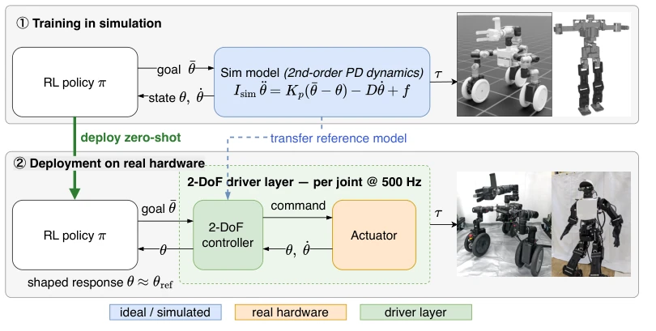
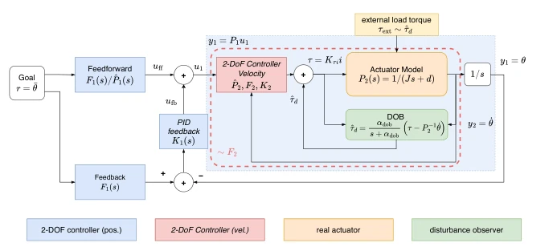
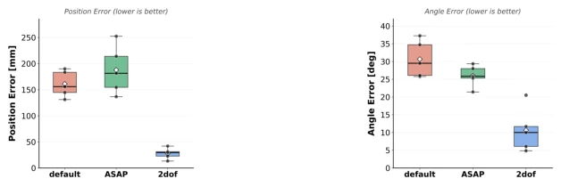
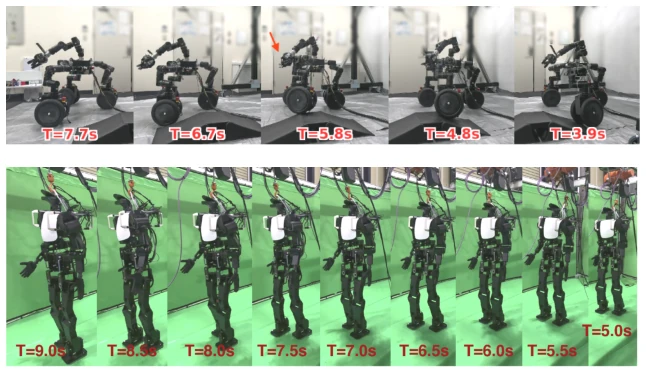
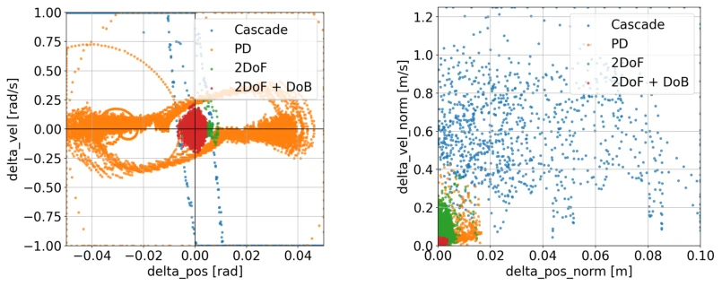
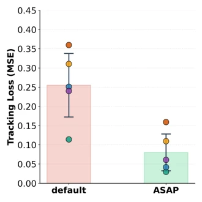

这篇论文玩了一招“逆向思维”：既然模拟器永远无法完美复刻物理世界的摩擦、惯性和延迟，那不如让物理电机去模仿模拟器的理想模型。作者没有像传统方法那样疯狂调参或增加仿真复杂度，而是给每个关节装上了一个“翻译官”——2-DoF 控制器加扰动观测器。这招确实狠，直接把 Sim-to-Real 的适配压力从策略层转移到了底层驱动层，实现了真正的 zero-shot 部署。不过，这招对高减速比伺服电机依赖较大，对于准直驱电机可能就得重新考虑了。虽然理论完美，但实际部署需要精确的电机参数，这算不算另一种形式的“系统辨识”？总之，这是一个把控制理论经典模块包装成 RL 基础设施的漂亮案例，但别指望它能解决所有非线性问题，毕竟物理定律不会因为你加了个 DOB 就消失。
This paper employs a 'reverse thinking' strategy: since simulators can never perfectly replicate the friction, inertia, and latency of the physical world, it is better to let physical motors mimic the simulator's ideal model. The authors did not frantically tune parameters or increase simulation complexity like traditional methods, but instead equipped each joint with a 'translator' — a 2-DoF controller plus a disturbance observer. This move is indeed decisive, directly shifting the Sim-to-Real adaptation pressure from the policy layer to the low-level drive layer, achieving true zero-shot deployment. However, this approach relies heavily on high-reduction-ratio servo motors, and may need reconsideration for quasi-direct-drive motors. Although theoretically perfect, actual deployment requires precise motor parameters, does this count as another form of 'system identification'? In short, this is a beautiful case of packaging classic control theory modules into RL infrastructure, but do not expect it to solve all nonlinear problems, after all, physical laws do not disappear just because you added a DOB.
When policies trained in reinforcement learning simulation are deployed to real machines, they often fail due to actuator dynamics differences. Real motors exhibit nonlinear effects such as friction, backlash, and saturation, while simulation usually assumes an ideal second-order model. Existing methods like domain randomization [6, 11] are robust but conservative in performance, and require a large simulation budget; learning-based models [1, 8] or ASAP [10] can compensate for differences, but rely on data collection or online identification for specific hardware, once hardware is replaced or ages, the policy fails. This strong dependence on hardware limits the reusability of policies. This paper aims to break this binding, proposing a standardized actuator interface, allowing policies to transfer zero-shot without fine-tuning for specific hardware, solving the core pain point of 'simulation policies cannot be deployed directly'.

Figure 1: Actuator reality shaping. We make the real actuator behave like the simulator’s ideal model, rather than the reverse. (Top) simulation with the ideal second-order reference model; (Bot- tom) zero-shot hardware deployment, where a per-joint 2-DoF driver shapes the response so that θ ≈θref.
The core architecture is 'Actuator Reality Shaping'. In the overall process, the RL policy is trained in simulation, outputting target joint angles; on the real machine, each joint is equipped with a 2-DoF drive layer. This drive layer consists of a position outer loop and a velocity inner loop cascaded, each loop adopts a 2-DoF control structure. The feedforward path (Feedforward) generates the expected response based on the simulation reference model (second-order PD dynamics), ensuring closed-loop behavior is consistent with simulation; the feedback path (Feedback) uses a PID controller to handle disturbances and model errors. Additionally, a disturbance observer (DOB) is introduced, estimating unmodeled dynamics such as friction and load through a low-pass filter, and canceling them in the current command. This design decouples reference tracking and disturbance suppression, making the real motor look like an ideal simulation model to the policy. In implementation, the controller runs at 500Hz, requiring only rough parameters such as motor torque constant and inertia, without needing task-level real data.

Figure 2: Proposed actuator reality shaping architecture (single joint): a cascaded 2-DoF controller (a position outer loop around a velocity inner loop) augmented with a disturbance observer (DOB) drives the real motor so that its closed-loop response tracks the simulator’s reference model.
Experiments cover multiple platforms from single joint to whole-body control. In single joint tracking tests, 2-DoF+DOB reduces position deviation by more than 96% compared to factory-level PID and simple PD. In 7-DOF robotic arm grasping tasks, the policy can be deployed zero-shot without fine-tuning, with end-effector error significantly lower than the baseline. Compared to ASAP [10], the latter can narrow the gap but relies on real data and training is prone to instability. Additionally, in wheel-legged robot climbing and humanoid robot walking tasks, this method also achieved zero-shot transfer, proving cross-platform generality. Ablation experiments show DOB further suppresses system bias caused by friction.

Figure 3: Comparison with ASAP [10] on the reaching task

Figure 4: Zero-shot demonstrations on other embodiments. The per-joint 2-DoF driver layer applied to (a) a wheeled legged robot climbing a slope and (b) a humanoid robot’s zero-shot walk.

Figure 5: Phase portraits comparing how closely each controller reproduces the simulator reference dynamics (1). (a) Single-axis sinusoidal tracking on the YM070 joint (∆θ, ∆˙θ), overlaid for all four controllers. (b) 7-DoF arm lemniscate reaching, with axes the norms of the end-effector position and velocity error vectors. The 2-DoF+DOB cloud concentrates near the origin; disabling the DOB or using the PD/cascade controllers increases the spread.

Figure 6: ASAP training-loss (paired runs). Curves correspond to the delta-action model fit on real- robot rollouts during ASAP’s Stage-A phase. Used as supporting evidence for the comparison in Fig. 3.